Det kan du i Embers of Quinary
En kampagne med historie, kampe i store baner og et skib, du selv bygger videre på.
Kampagne med historie
Scriptede missioner, nødsignaler og baghold. Nullborn er den fælles fjende, og de bliver farligere, jo længere du kommer.
Opgrader dit skib
Vælg mellem skibe med egne roller og våben, og lås flere op undervejs.
Udforsk og tjen penge
Rejs mellem sektorer via jumpgates, mine asteroider og tag missioner på stationerne.
Spil alene
Ingen konto og ingen internetforbindelse. Gem på din hjemmestation og fortsæt senere.
Fra spillet
Rigtige skærmbilleder. Klik på et billede for at se det stort.
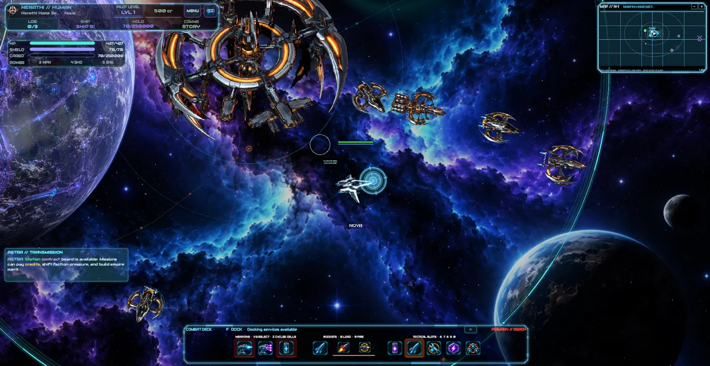
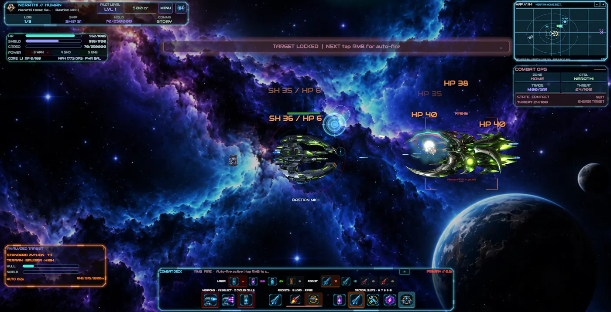
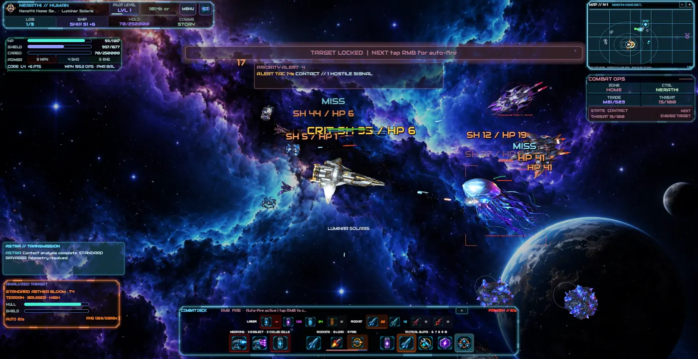
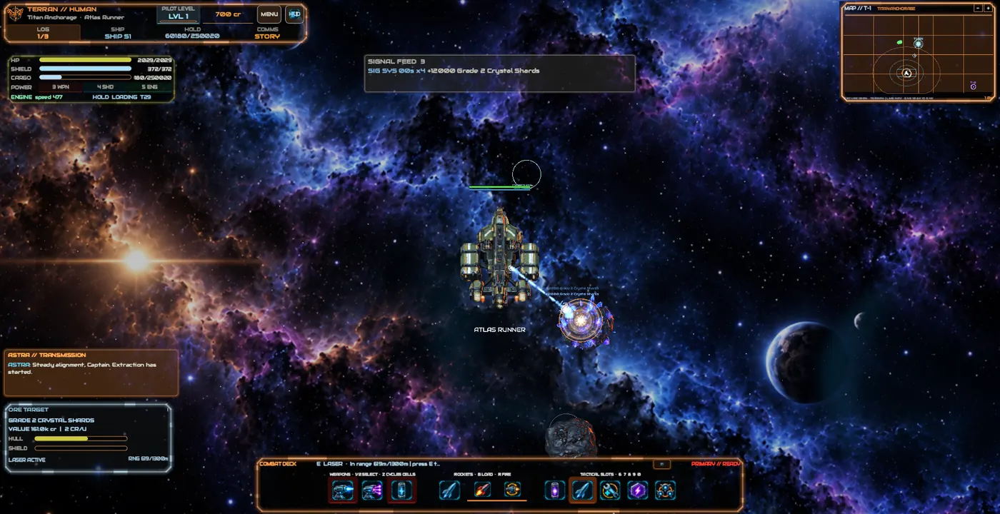
På stationen
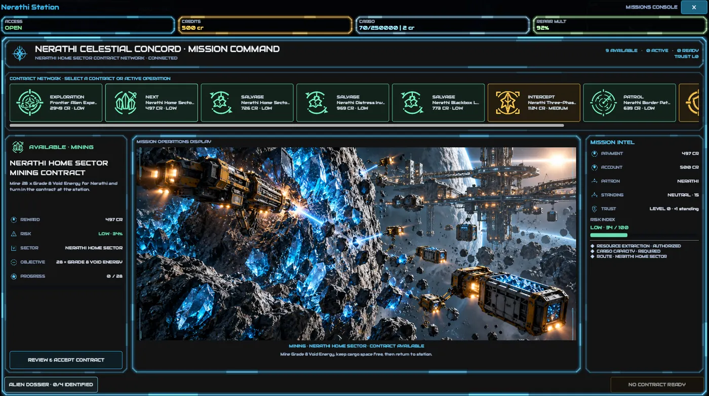
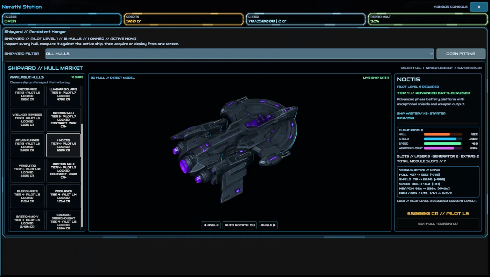
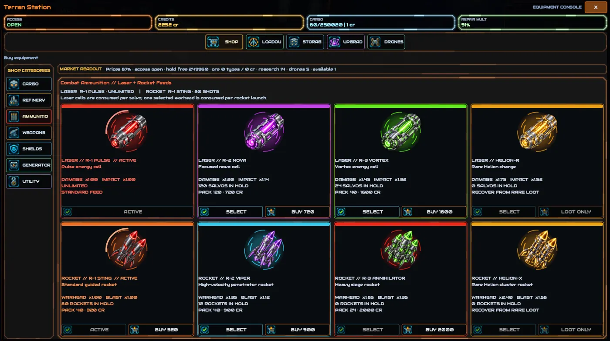
Fem menneskelige imperier
Du vælger dit imperium, når du starter. Hvert har sin egen historie, sit eget skib og sine egne styrker.
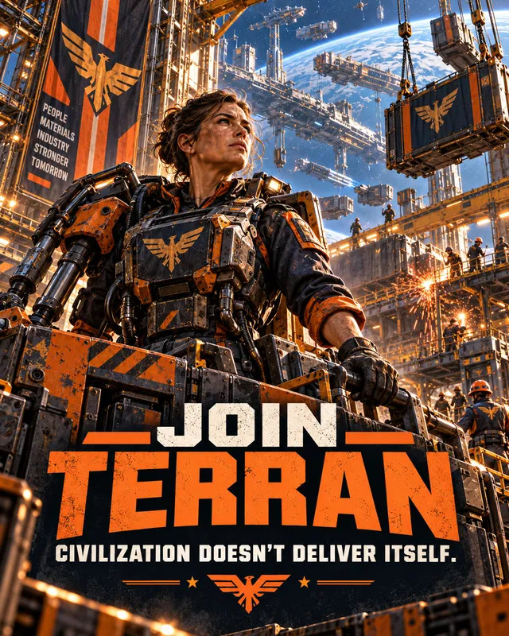
Terran
Industrial Commonwealth
En nøgtern menneskelig civilisation drevet af industri, logistik, handel, minedrift og enorm infrastruktur. Arbejdere, selskaber, militær og administratorer holder maskinen kørende.
Industriel logistik · Robust infrastruktur · Balancerede flåder
Civilization doesn't deliver itself.
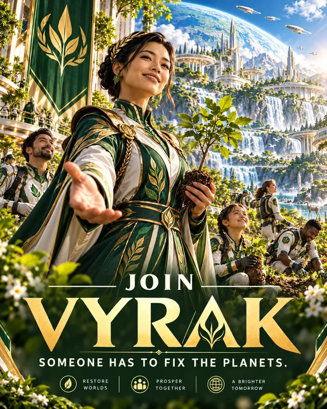
Vyrak
Verdant Compact
En menneskelig civilisation viet til fred, velstand og terraforming. De mener, at nogen må gøre galaksen værd at leve i.
Terraforming · Hurtig reparation · Langsigtet ekspansion
Someone has to fix the planets.
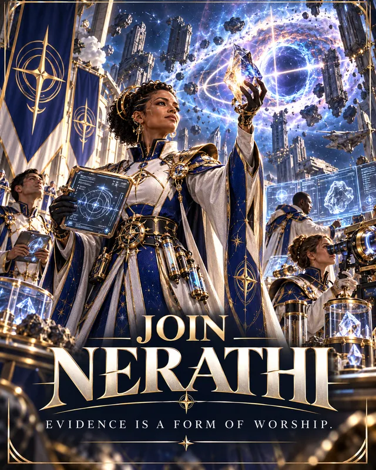
Nerathi
Celestial Concord
Forskere og opdagelsesrejsende, der tror, at universets struktur og anomalier kan afsløre en højere intelligens. Hver opdagelse er både bevis og tilbedelse.
Videnskabelig opdagelse · Høj manøvredygtighed · Avancerede skjolde
Evidence is a form of worship.
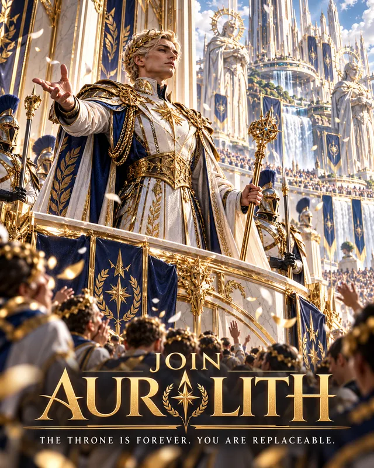
Auralith
Eternal Crown
Et gammelt monarki, hvis kongelige elite lever ekstremt længe eller er ægte udødelige. Det samme hof har styret i århundreder ad gangen.
Kongelig kontinuitet · Stråleskade · Prismatiske forsvar
The throne is forever. You are replaceable.
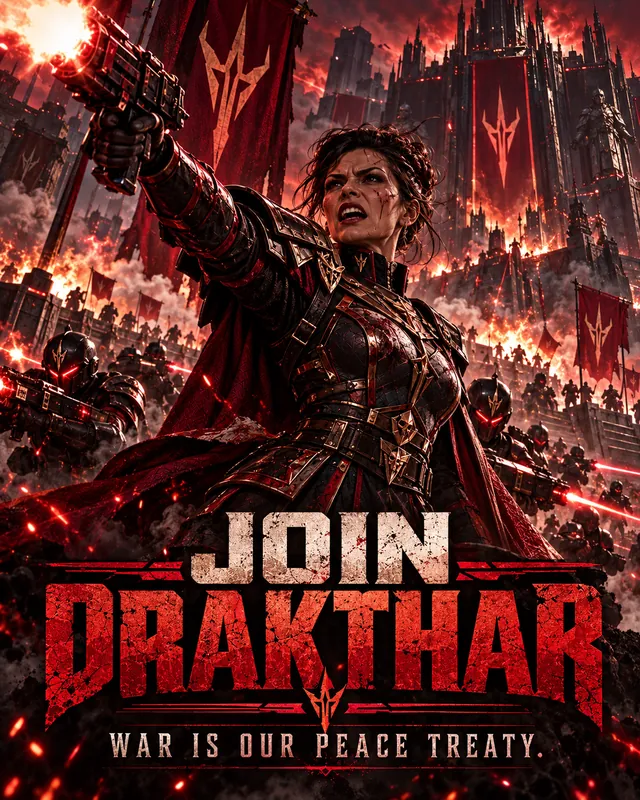
Drakthar
War Dominion
Den mest militaristiske af de fem civilisationer. Styrke, disciplin og sejr er alt; fred er blot pausen mellem krigene.
Tunge skrog · Militær disciplin · Hårde modangreb
War is our peace treaty.
Ni slags missioner
Fra patruljer og minedrift til fronten mod Nullborn. Der er altid noget at tage fat på.
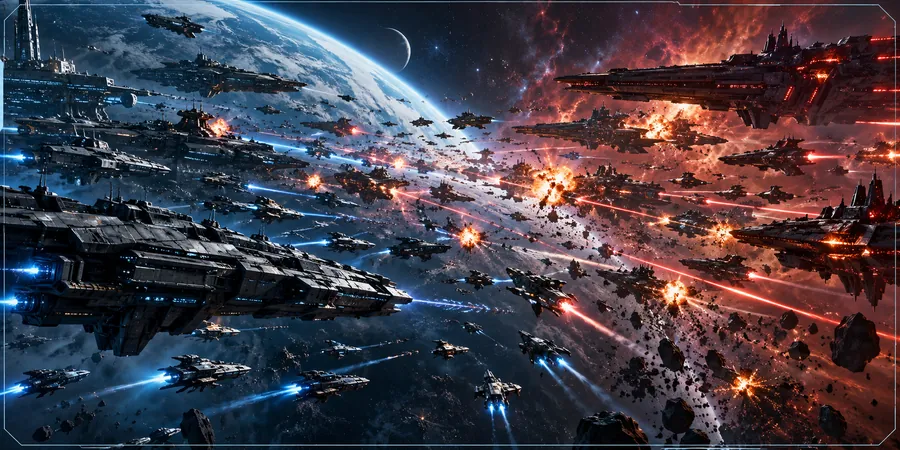
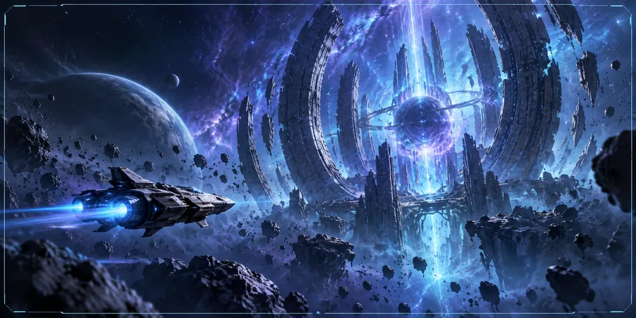
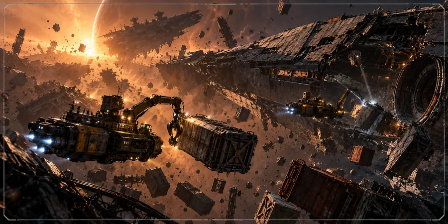
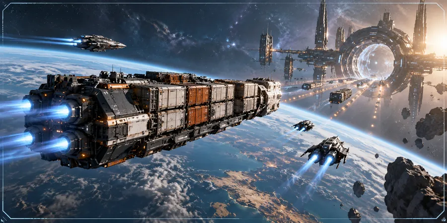
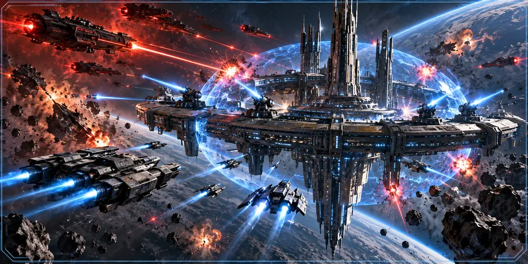
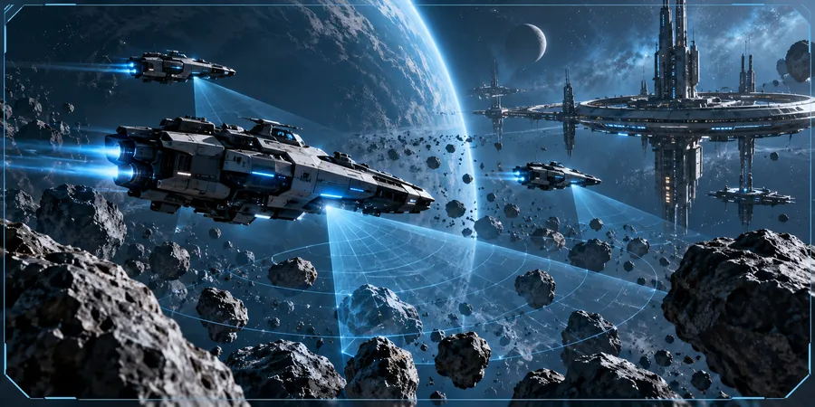
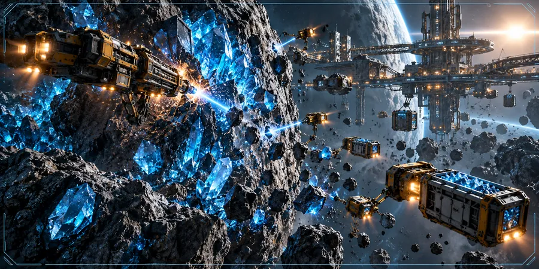
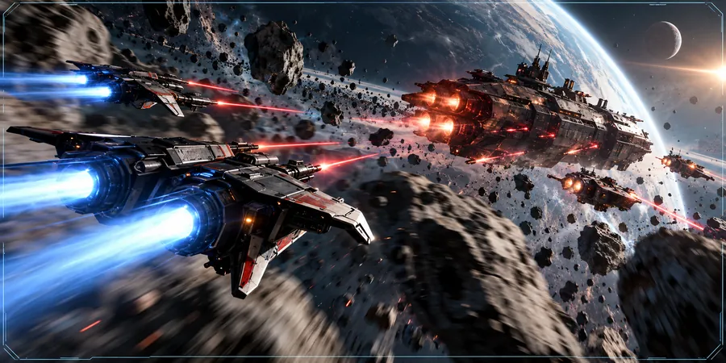
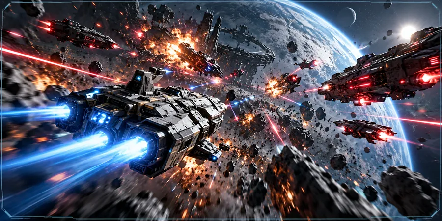
Download kommer snart
Embers of Quinary er stadig under udvikling og er ikke klar til download endnu. Når den første version er færdig, kan du hente den her, helt gratis.
Windows
Planlagt til første udgivelse.
Kommer snartLinux
Planlagt til første udgivelse.
Kommer snartMac
Måske senere.
Ikke planlagt endnu| Flyv | Venstreklik, eller WASD / piletaster |
|---|---|
| Skyd | Højreklik eller mellemrum |
| Mine | E ved nærmeste asteroide |
| Station / jumpgate | F, når du er tæt på |
| Verdenskort | M |